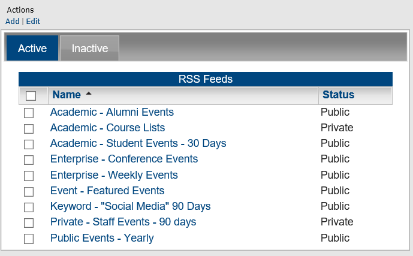
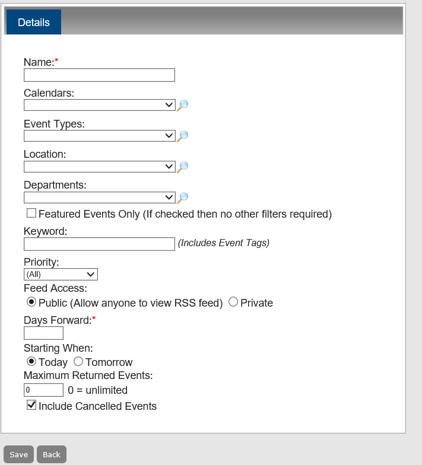
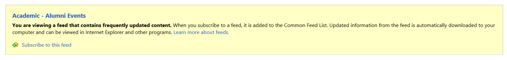
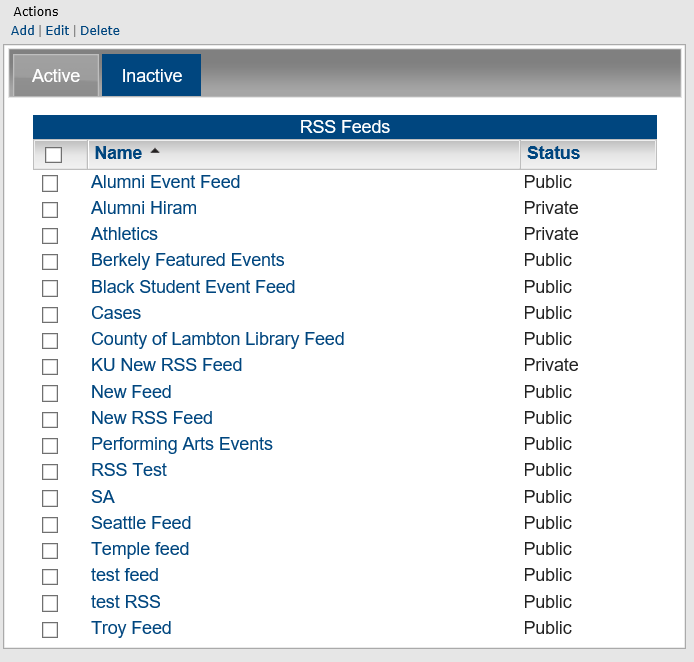
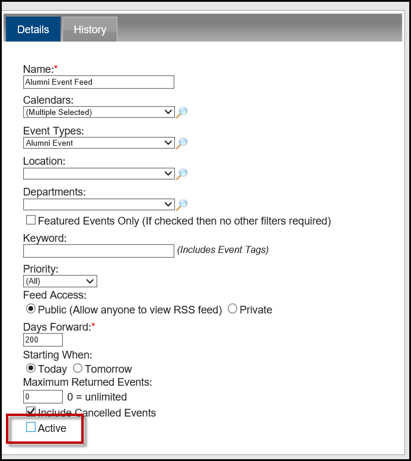
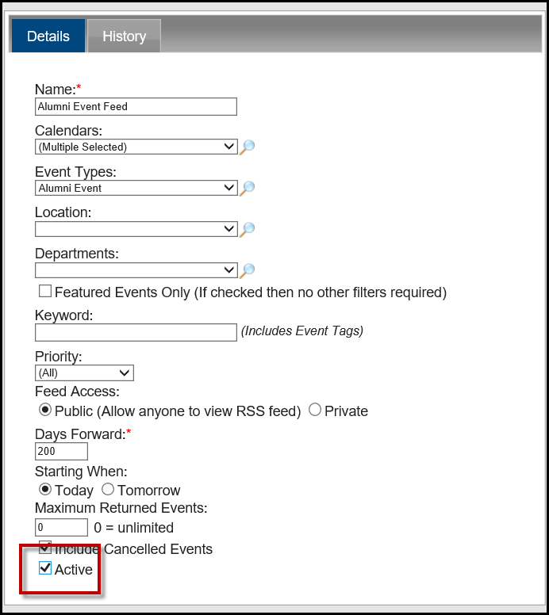
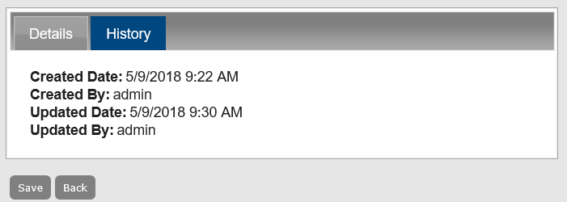

A Really Simple Syndication (RSS) feed can be used to provide convenient links to dynamic web content in your Master Calendar. A featured RSS feed is like a calendar URL. It can be featured across the top or bottom of your Master Calendar default page, and it can be static or dynamic (See Also: Setting the Default Page Layout). All other RSS feeds appear under the RSS link at the bottom of each page in Master Calendar. All public RSS feeds are always available from this link. Private RSS feeds are available to users only after they log in to Master Calendar. Managing RSS feeds consists of adding RSS feeds, activating and inactivating RSS feeds, editing RSS feeds, and deleting RSS feeds. You can also view the history for an RSS feed.
This topic will provide information that will allow you to:


| field | DESCRIPTION |
|---|---|
Name | The name for the RSS feed. |
Calendars | A list of all active calendars to which you have access as a Calendar Manager. Click the Lookup icon to open the Calendars dialog box and select the calendar or calendars from which the RSS feed is to pull information. |
Event Types | A list of all active event types that are currently configured in Master Calendar. Click the Lookup icon to open the Event Types dialog box and select the event type or types that RSS feed should pull. |
Location | A list of all active event locations that are currently configured in Master Calendar. Click the Lookup icon to open the Locations dialog box and select one or more locations. The RSS feed will pull the events with these specific locations. |
Departments | A list of all active departments that are currently configured in Master Calendar. Click the Lookup icon to open the Departments dialog box and select the department or departments to select the events with these specific departments that the RSS feed should pull. The RSS feed will pull the events with these specific departments. NOTE: Department is a default label. Depending on how your Master Calendar site administrator has configured Master Calendar, you might see this labeled as something else, such as “Business Units” for example. |
Featured Events Only | If this box is checked, no other filters are required. |
Keyword | Enter a search string to further filter the events that are pulled by the RSS feed. NOTE: The search is limited to the exact order of the characters in the string; however, the search string is not case-sensitive and the search string can be found anywhere in the search results. For example, the search string “scout” returns holidays that contain either Scouting Day or Boy Scouts’ Day. |
Priority | Indicate the priority of the events that the RSS feed should pull. The default value is All. You can change this to one of three values:
|
Feed Access |
|
Days Forward | The number of days going forward from the current day’s date that the RSS feed should pull information. |
Starting When |
|
Maximum Returned Events | The maximum number of events that the RSS feed should return. The default value is 0, which means that there is no limit to the maximum number of events returned. |
Include Canceled Events | The default value is Yes. To set to No, clear this selection. |
RSS Links
Previewing an RSS feed




You can edit both active and inactive RSS feeds.
You can delete only inactive RSS feeds. To delete an active RSS feed, you must first inactivate it.
The history for an RSS feed consists of the original creation date of the feed, the name of the user who created the feed, and the last date that the feed was edited as well as the name of the user who last edited the feed. You can view the history for both active and inactive feeds.
